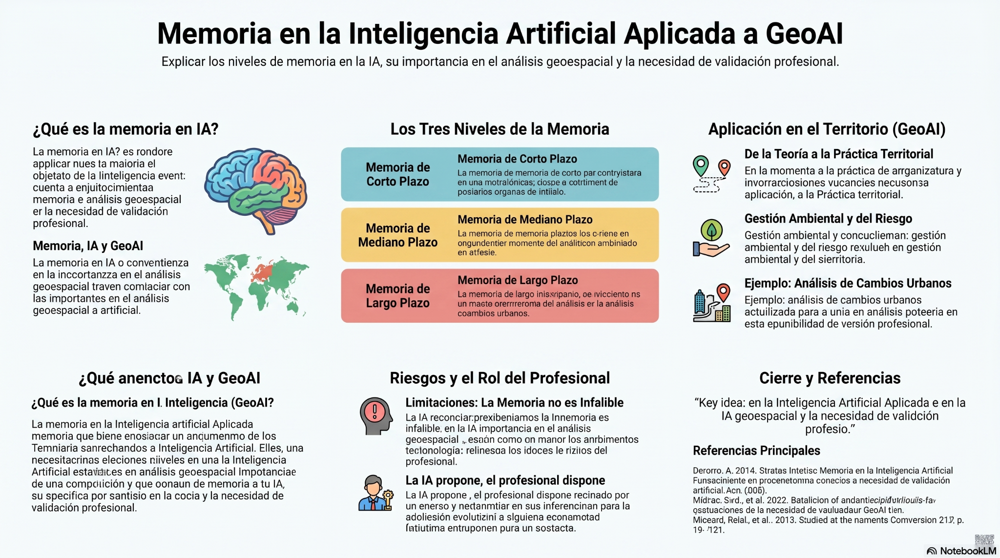
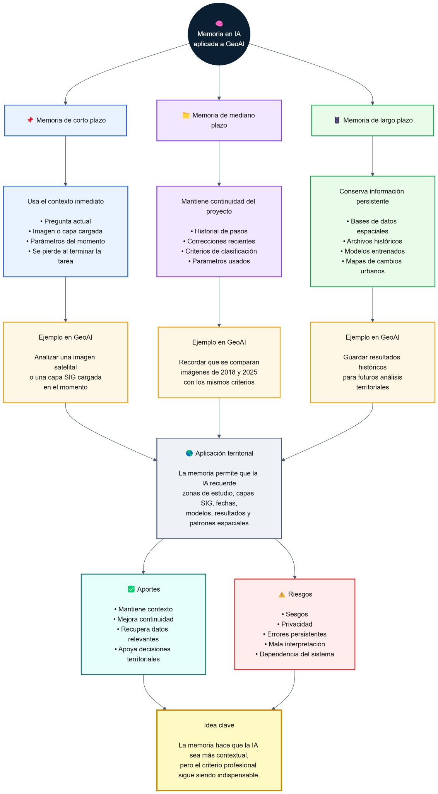

🧠
Memoria en IA
Capacidad de conservar, recuperar o usar información previa para mejorar una tarea o análisis.
Página académica sobre cómo los sistemas inteligentes conservan contexto, procesos y conocimiento territorial para apoyar el análisis geoespacial, sin reemplazar la validación profesional.
El tema central es la memoria en inteligencia artificial. GeoAI funciona como campo de aplicación territorial y el análisis de cambios urbanos se usa únicamente como caso aplicado.
Capacidad de conservar, recuperar o usar información previa para mejorar una tarea o análisis.
Aplicación de IA sobre datos geográficos, capas SIG, imágenes satelitales y registros territoriales.
Corto plazo para contexto inmediato, mediano plazo para continuidad y largo plazo para persistencia.
La memoria mejora el análisis, pero la decisión técnica debe ser revisada por el profesional.
No se entiende como memoria humana, sino como mecanismos técnicos que permiten que una IA mantenga contexto, recupere datos y use información previa.
La memoria en inteligencia artificial es la capacidad de un sistema para usar información previa durante una tarea. Esa información puede venir de una instrucción actual, un historial de sesión, una base de datos, un repositorio documental, una base vectorial o un modelo entrenado.
En GeoAI, esta capacidad es importante porque el análisis territorial no depende de un solo insumo. Normalmente integra imágenes satelitales, capas SIG, información catastral, límites administrativos, datos ambientales, modelos digitales del terreno y resultados de procesos anteriores.
Interactúa con los botones para ver cómo cambia la función de la memoria según su duración y su utilidad dentro de un proceso geoespacial.
Usa la información inmediata: pregunta actual, imagen cargada, capa SIG, parámetros del momento o instrucción específica del usuario.
Analizar una imagen satelital cargada en el momento para identificar patrones visibles, como vías, vegetación, agua o zonas construidas.
Mantiene continuidad durante una sesión o proyecto: pasos realizados, criterios, correcciones recientes, filtros aplicados y parámetros definidos.
Recordar que el análisis compara imágenes de 2018 y 2025, que ya se filtraron nubes y que se aplicaron criterios de clasificación.
Conserva información persistente para futuros análisis: bases de datos espaciales, archivos históricos, modelos entrenados y mapas clasificados.
Recuperar mapas históricos de cobertura del suelo de 2018, 2020 y 2025 para detectar tendencias de expansión urbana o presión ambiental.
La memoria permite pasar de respuestas aisladas a procesos de análisis más continuos, comparables y trazables.
Imagen satelital, capa SIG, consulta del usuario, metadatos o información catastral.
La IA interpreta el insumo actual y usa instrucciones, parámetros y criterios definidos.
El sistema conserva pasos, resultados, correcciones o conocimiento persistente según el tipo de memoria.
El resultado no depende solo del dato inmediato, sino también de contexto, historial y validación técnica.
En inteligencia artificial geoespacial, recordar información implica conservar capas, geometrías, fechas, clasificaciones, resultados y criterios técnicos.
La memoria permite recordar fechas, escenas analizadas, filtros de nubes, resolución espacial y resultados de clasificación.
Puede conservar información sobre vías, límites, predios, coberturas, zonas de interés y criterios de cruce espacial.
Apoya catastro, planeación urbana, gestión ambiental, riesgo, avalúos y monitoreo multitemporal.
La detección de cambios urbanos se usa como ejemplo para mostrar cómo operan los tres niveles de memoria en un análisis territorial.
Procesa la escena satelital actual y responde a una pregunta puntual: identificar zonas construidas, vías o vegetación visible.
Recuerda el flujo de trabajo: área de estudio, filtros aplicados, criterios de clasificación y correcciones recientes.
Recupera clasificaciones históricas para comparar años, reconocer tendencias y construir memoria territorial.
La memoria vuelve más útil a la IA, pero también puede conservar errores, sesgos o interpretaciones equivocadas.
La IA propone, el profesional dispone. La inteligencia artificial puede organizar, recordar y señalar patrones, pero el profesional debe interpretar, contrastar y validar los resultados con criterio técnico, jurídico y territorial.
Aquí se integran los materiales elaborados: afiche, mapa mental, presentación y documento académico.


Si el navegador lo permite, aquí se puede previsualizar la presentación en PDF. También está disponible para descarga en la sección siguiente.
Referencias incluidas en el documento académico.
{kind=link}
{kind=link}